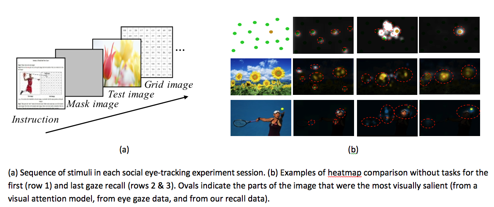

Abstract
Eye tracking is a compelling tool for revealing people’s spatial-temporal distribution of visual attention. But quality eye tracking hardware is expensive and can only be used with one person at a time. Further, webcam eye tracking systems have significant limitations on head movement and lighting conditions that result in significant data loss and inaccuracies. To address these drawbacks, we introduce a new approach that harnesses the crowd to understand allocation of visual attention. In our approach, crowdsourcing participants use mouse clicks to self-report the positions and trajectory for the following valuable eye tracking measures: first gaze, last gaze and all gazes. We validate our crowdsourcing approach with a user study, which demonstrated good accuracy when compared to a real eye tracker. We then deployed our prototype, GazeCrowd, in a crowdsourcing setting, and showed that it accurately generated gaze heatmaps and trajectory maps. Such an approach will allow designers to evaluate and refine their visual design without requiring the use of limited/expensive eye trackers.
Materials
PDF |
Slides |
BibTeX